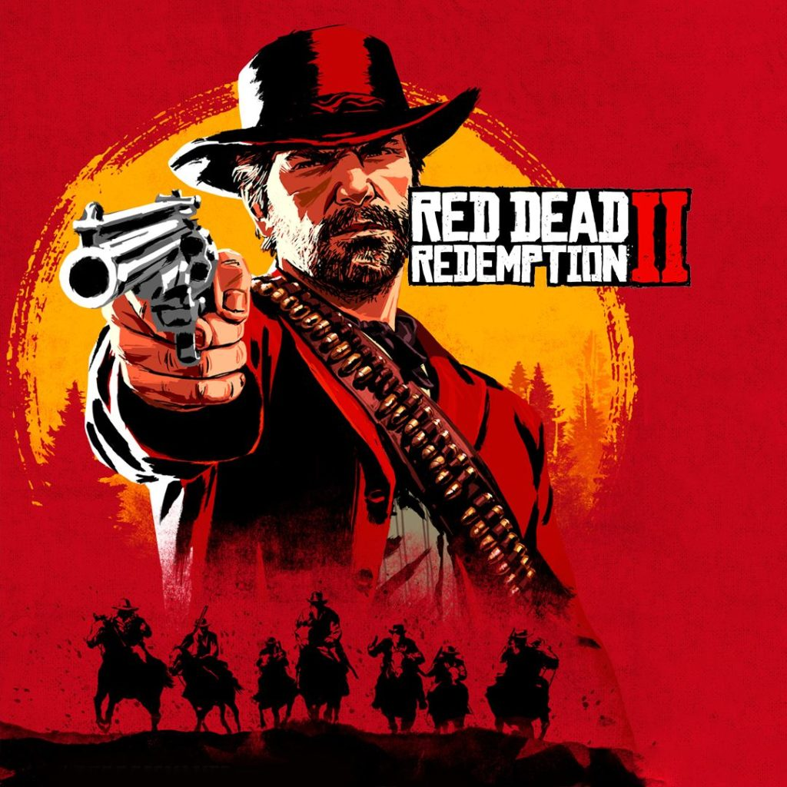

Mijn favoriete game aller tijden is Red Dead Redemption 2.
Hier onderstaand staat de cover foto van de videogame
Het is een videogame dat zich afspeelt in de late jaren van de 18e eeuw
Red Dead Redemption 2 is een actie-avonturenspel ontwikkeld door Rockstar Studios.
De game is uitgegeven door Rockstar Games en op 26 oktober 2018 uitgebracht voor PlayStation 4 en Xbox One.
Ruim een jaar later, op 5 november 2019, is de game ook beschikbaar voor Microsoft Windows.
De game speelt zich 12 jaar voor de gebeurtenissen van Red Dead Redemption af, dat in 2010 werd uitgebracht.
Mijn favoriete mobiel game is daarnaast een wat simpelere game.
De naam van mijn favoriete game is Clash royale
In Clash Royale strijden 2 spelers tegen elkaar in verschillende arena's
(in 2v2 vecht een team van 2 spelers tegen een ander team van 2 spelers).
Elke speler heeft 3 torens in de arena, 1 koningstoren en 2 prinsessentorens.
Het doel is om binnen de tijdslimiet zoveel mogelijk torens van de tegenstander te vernietigen met behulp van kaarten.
De speler moet ook proberen te voorkomen dat zijn toren door de tegenstander wordt vernietigd.